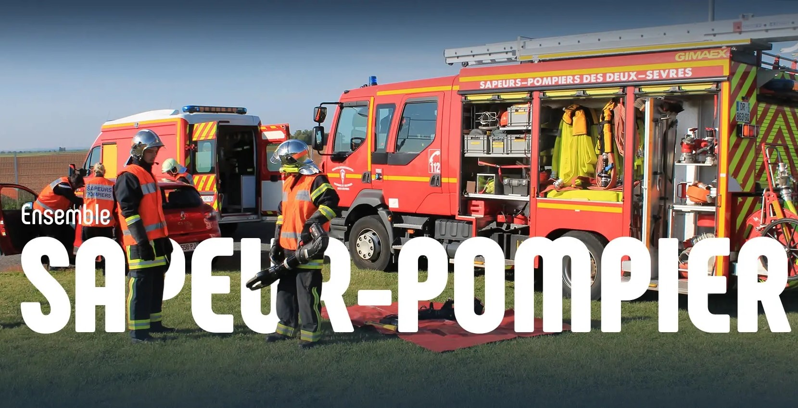
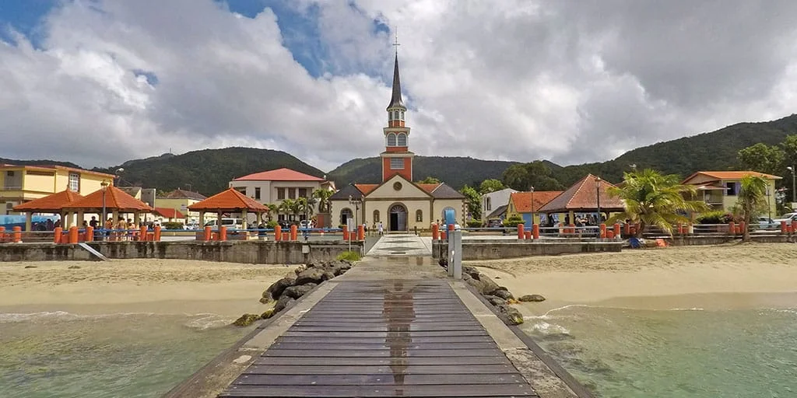
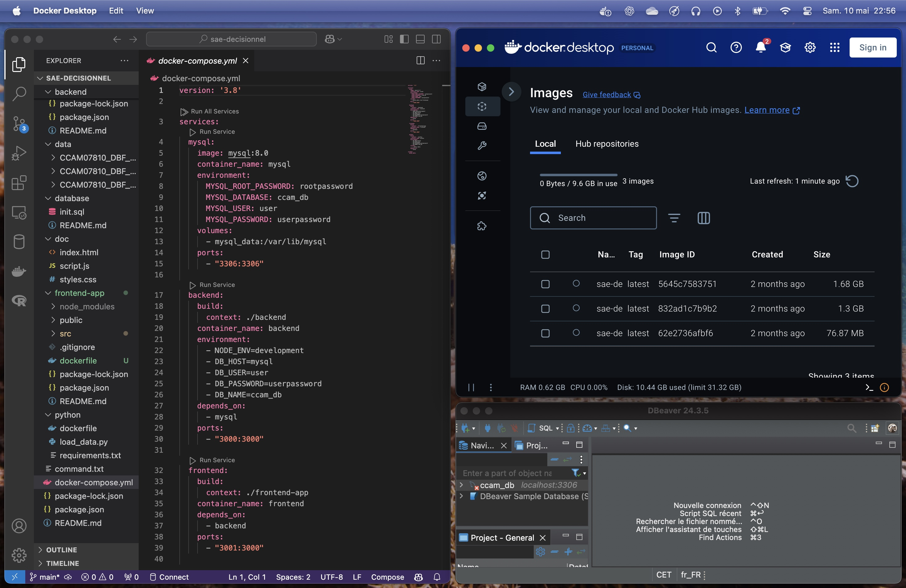
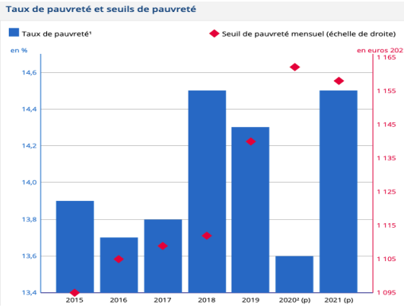
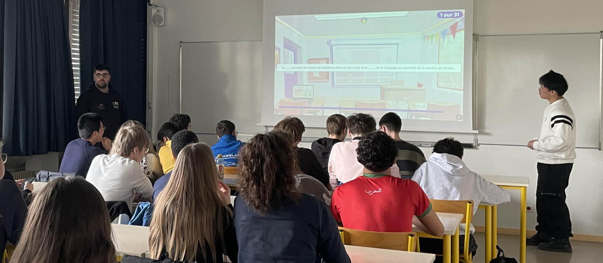
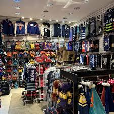
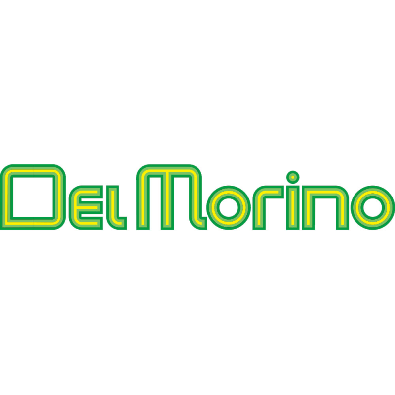

Projets 1ère année
Voici une liste de mes projets réalisés en première année à l'IUT :
- Conception et Implémentation d'une base de données : SQL, Python, CSV
- Concours Datavisualisation : Power BI, PPT, CSV
- Analyse de Données, Reporting et Datavisualisation : Power BI, Python, PPT, Excel
- Régression Linéaire : R avec R Studio
- Production de données : Python, SQL, Excel
Conception et Implémentation d'une base de données
Projet de création d’une base de données pour la gestion des pompiers et des interventions, intégrant les spécificités des statuts, des casernes et des situations d’urgence. Ce travail m’a permis de consolider mes compétences en modélisation et en SQL.
Si cela vous intéresse, vous pouvez télécharger le code python

Concours Datavisualisation
Projet de datavisualisation sur l’importance des services météorologiques pour la sécurité, à partir des données de Météo-France. J’ai conçu des visualisations pour illustrer l’impact local des phénomènes climatiques et l’utilité de la prévision.
Si cela vous intéresse, vous pouvez télécharger le power BI
Analyse de Données, Reporting et Datavisualisation
Le but de ce projet est de concevoir un outil dynamique permettant d'évaluer l'étendue et les caractéristiques des Accidents de la Vie Courante (AcVC) en France à partir de données fournis par l'Observatoire Mavie, d'identifier les facteurs de survenue et de gravité, et de proposer des mesures de prévention adaptées et innovantes.
Si cela vous intéresse, vous pouvez télécharger le power point ou télécharger le power BI
Régression Linéaire
La régression linéaire est une méthode statistique utilisée pour modéliser la relation entre une variable dépendante (ou cible) et une ou plusieurs variables indépendantes (ou prédicteurs). Le but est de trouver la meilleure ligne droite (ou hyperplan dans le cas de multiples prédicteurs) qui minimise la somme des carrés des différences entre les valeurs observées et les valeurs prédites. Nous devions étudier le cas des logements sur Paris.
Si cela vous intéresse, vous pouvez télécharger mon rapport
Production de données en entreprise
Ce projet consistait en une étude approfondie de la situation socio-économique de la Martinique en 2020. J'ai analysé des données démographiques, économiques et sociales afin de dresser un état des lieux précis et d'identifier les principaux enjeux du territoire. L'étude a permis de mettre en lumière les dynamiques de population, d'emploi, de développement économique et les défis spécifiques rencontrés par la Martinique.
Si cela vous intéresse, vous pouvez télécharger le rapport

Projets 2ème année
Voici une sélection de mes projets les plus enrichissants réalisés en deuxième année à l'IUT :
- Développement d’un composant d’une solution décisionnel : Power BI, SQL, voir détails
- Reporting d'une analyse multivariée : R, Shiny, voir détails
- Répondre aux Besoins du territoire : Power BI, voir détails
- Intégration de données dans un datawarehouse : SQL, voir détails
- Collecte de donnée web : Python, voir détails
Développement d’un composant d’une solution décisionnel
Développement d’une API REST avec NodeJS et MySQL pour faciliter l’accès à la base CCAM, permettant aux professionnels de santé de rechercher et d’exploiter efficacement les actes médicaux. Ce projet m’a permis de renforcer mes compétences en développement backend et en gestion de bases de données.

SAE 4.02 : Reporting d’une analyse multivariée
Création d’un outil interactif de suivi de la pauvreté en France (1970-2021), permettant une visualisation claire des évolutions et facilitant la prise de décision au niveau territorial. Ce projet a renforcé mes compétences en datavisualisation et en analyse de données sociales.

Consultez le site : https://daweizhou.shinyapps.io/SAEZhouDubuyRigot/
Répondre aux Besoins du territoire - Cours à Jean Macé
Ce projet a consisté à concevoir et animer des séances d’initiation au HTML, CSS et à l’introduction au JavaScript auprès des élèves de 1ère NSI du lycée Jean Macé. L’objectif principal était de transmettre les bases du développement web et de susciter l’intérêt des élèves pour les technologies numériques. Cette expérience m’a permis de développer mes compétences pédagogiques et de gestion de groupe, tout en confirmant mon attrait pour le partage de connaissances, même si je ne me projette pas dans une carrière d’enseignant.

Intégration de données dans un datawarehouse
Ce projet avait pour objectif d’alimenter un entrepôt de données (datawarehouse) afin d’analyser l’évolution des ventes selon plusieurs axes : géographie, temps, produit, client et employé. Nous avons conçu et intégré les données pour permettre la création de tableaux de bord dynamiques et interactifs, offrant une vision complète des performances de l’entreprise. Au total, une dizaine de tableaux de bord ont été réalisés, permettant de visualiser les ventes par région, par période, par catégorie de produit, par segment de clientèle ou encore par employé. Ces outils facilitent la prise de décision stratégique et l’identification des leviers de croissance.
Si cela vous intéresse, vous pouvez télécharger le rapport.

Collecte de donnée web
Ce projet a consisté à automatiser la collecte et l’analyse de données ouvertes sur le territoire français. J’ai développé un script Python pour extraire des données géographiques et créer des visualisations interactives, ainsi qu’un outil exploitant l’API ADEME pour analyser les diagnostics énergétiques des logements. Ce travail m’a permis de renforcer mes compétences en automatisation, en intégration d’API et en datavisualisation.
Si cela vous intéresse, vous pouvez télécharger l’archive du projet.

Projets Personnels
Voici quelques-uns de mes projets personnels réalisés pendant mes stages :
- Système d'Assurance Qualité chez Del Morino : Excel
- Stage à Veolia Eau Chine : YongHong BI, SQL, Excel
Système d'Assurance Qualité chez Del Morino
Pendant mon stage chez Delmorino, j'ai eu l'opportunité de travailler en étroite collaboration avec un tuteur expérimenté pour mettre en place un système d'assurance qualité. Sous sa guidance attentive, j'ai participé à toutes les étapes du processus, de la conception à la mise en œuvre du système. Ce fut une expérience enrichissante qui m'a permis d'acquérir une compréhension approfondie des normes de qualité et des meilleures pratiques dans le domaine. Ce système d'assurance qualité a permis à l'entreprise de garantir la fiabilité et la cohérence de ses produits tout en optimisant ses processus de production. Grâce à cette initiative, Delmorino a pu renforcer la confiance de ses clients et consolider sa réputation d'excellence dans l'industrie..
Si cela vous intéresse, vous pouvez télécharger mon rapport

Stage à Veolia Chine
Actuellement en stage chez Veolia en Chine